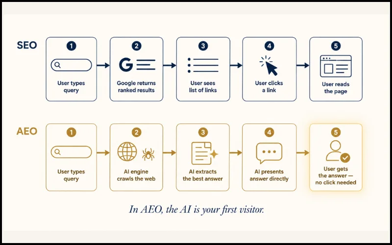

The rules of search just changed — and most websites haven't caught up. For two decades, SEO was the only game in town: rank higher, get more clicks, win. But in 2026, a growing share of users never see a list of blue links at all. They ask a question, get a direct answer from an AI, and move on. Your content either powers that answer — or it doesn't exist for that user.
SEO (Search Engine Optimization) helps your pages rank higher in traditional search results. AEO (Answer Engine Optimization) helps AI systems like Google AI Overviews, ChatGPT, and Perplexity choose your content as the direct answer to a user's question. SEO competes for position. AEO competes to be the answer itself. In 2026, you need both — but they require different strategies.
This guide breaks down the real difference between SEO and AEO, how AI engines decide what to cite, and exactly what you need to build into your website pages to stay visible in both worlds. If you're building a blog, learning platform, or any kind of content-driven site right now, this is the most important shift to understand.
What is SEO — and Why It Still Matters
SEO, or Search Engine Optimization, is the practice of making your web pages rank higher in search engine results — primarily Google. When someone searches for something, Google's algorithm evaluates hundreds of signals to decide which pages deserve the top spots. SEO is the work of giving Google what it needs to trust and rank your content.
Keywords & Search Intent
The foundation of SEO is matching your content to what people actually search for. This means targeting the right keywords — but more importantly, understanding why someone is searching. A page about "how to make coffee" serves a different intent than "best coffee shops near me." Modern SEO optimises for intent, not just phrases.
Technical Health
Google can't rank a page it can't crawl and index. Technical SEO covers fast page load speeds, mobile-friendliness, clean site structure, working internal links, and no broken pages. If your technical foundation is weak, great content won't save your rankings.
Authority and Backlinks
Google treats links from other reputable websites as votes of confidence. The more quality sites that link to your content, the more Google trusts it. Building this link equity over time is one of the most powerful — and slowest — parts of SEO.
Content Quality and E-E-A-T
Google's quality guidelines use the framework E-E-A-T: Experience, Expertise, Authoritativeness, Trustworthiness. Content written by real experts with demonstrated knowledge ranks better. Thin, generic, or AI-spun content is being actively deprioritised.
UX Signals
Google watches how users behave on your page. Do they stay and read, or bounce back immediately? Core Web Vitals — measuring page speed, visual stability, and interactivity — are now official ranking factors. A frustrating experience is an SEO problem.
Despite the rise of AI search, traditional SEO still drives the majority of web traffic. Billions of searches returning ranked results — product comparisons, local services, how-to queries, reviews — still go through traditional SERP pages. SEO isn't being replaced. It's being joined by something new.
What is AEO — and Why It's Different
AEO, or Answer Engine Optimization, is the practice of structuring your content so that AI-powered systems can extract, understand, and present it as a direct answer to user questions. Where SEO asks "how do I rank higher?", AEO asks "how do I become the answer?"
The shift is driven by a new generation of answer engines:
- Google AI Overviews — AI-generated summaries at the top of Google search results
- Perplexity AI — A search engine that answers questions by citing multiple sources
- ChatGPT Search — OpenAI's browse-enabled model that pulls live web content
- Microsoft Copilot — Bing-powered AI answers in search and productivity tools
- Voice assistants — Siri, Google Assistant, Alexa — all powered by AI answer extraction
How AI Engines Decide What to Cite
AI engines don't "rank" pages the way Google does. They read pages and extract answers. The selection process is built on five signals:
1. Directness and clarity — AI models favour content that answers the question immediately. If your answer is buried in paragraph 6 after three paragraphs of preamble, the AI will find a page that gets to the point faster.
2. Structured data (Schema markup) — JSON-LD tells AI systems in machine-readable language exactly what type of content your page contains, who wrote it, when it was published, and what questions it answers.
3. Authoritative entity signals — AI models build knowledge graphs. They look for pages with clear entity signals — who runs the site, what it's about, whether it's linked to from trusted sources.
4. FAQ and Q&A patterns — If your page contains sections structured as questions and answers, AI engines are more likely to extract from it. They are, fundamentally, answer-seeking machines.
5. Content freshness and accuracy — AI systems prioritise recently updated, factually accurate content. A page published in 2019 without updates loses to a well-structured 2026 equivalent.
In traditional SEO, the user clicks your link and visits your page. In AEO, the AI visits your page on the user's behalf, extracts your answer, and presents it without a click. Your goal shifts from attracting visitors to becoming a trusted source the AI quotes.
Think Like a Question: Before writing any section, ask "What question does this answer?" Write the answer directly and clearly in the first 1–2 sentences. AI engines will find it instantly.
SEO vs AEO — The Key Differences Explained
The table below captures the most important distinctions across every dimension that matters for your content strategy.

| Dimension | SEO | AEO |
|---|---|---|
| Primary Goal | Rank higher in search results | Be cited as the direct answer |
| Optimised For | Google's ranking algorithm | AI reasoning & extraction logic |
| Success Metric | Click-through rate, position | Citations, AI Overview appearances |
| Content Format | Long-form, keyword-dense | Direct, structured, Q&A-ready |
| Schema Markup | Helpful for rich results | Near-essential for extraction |
| Links & Backlinks | Critical for authority | Useful, but secondary |
| User Journey | User clicks → reads your page | AI reads → user gets the answer |
| Page Speed | Ranking factor (Core Web Vitals) | Required for AI crawling too |
| Author Identity | Helpful for E-E-A-T | Critical — AI needs named entity |
| Update Frequency | Regular updates rewarded | Freshness is a stronger trust signal |
| Content Style | Keywords woven naturally | Definitions first, context second |
The Most Important Difference: Who Is the "Visitor"?
In an SEO world, the visitor is a human who clicked a link. You optimise for their reading experience, their time-on-page, their emotional response to your content. In an AEO world, the first "visitor" is an AI model. It doesn't get bored, it doesn't appreciate your storytelling, and it doesn't care about your brand personality. It's looking for one thing: a clear, accurate, trustworthy answer it can extract and present with confidence.
This doesn't mean you write dry, robotic content. The human reader still arrives eventually — if the AI cited you, that means traffic and trust. But it does mean your content structure needs to serve both audiences simultaneously.
"Optimising for AI search isn't about tricking machines. It's about being genuinely clear, genuinely authoritative, and genuinely structured — the same things great writing has always required."
— NeeAr Ventures Editorial
Inside the Black Box — How AI Engines Select What to Cite
Understanding this is what separates AEO practitioners from people just guessing.
Step 1: Crawling and Indexing
AI-powered search engines crawl the web — but they pay closer attention to structured, machine-readable signals. A page with clear <article> semantic HTML, proper heading hierarchy (H1 → H2 → H3), and JSON-LD schema is far easier for an AI to "understand" than a wall of unstyled text.
What this means: Use semantic HTML correctly. Every page should have exactly one H1, logical H2 subheadings, and content that flows as an outline.
Step 2: Entity Recognition
AI models maintain internal knowledge graphs. When they read your page, they try to match entities — people, organisations, topics, places — against what they already know. A page with a clearly named publisher, a dated publication, and identifiable authorship gives the AI a rich entity map to anchor trust. A page from "Admin | Published: Unknown" gives it almost nothing.
What this means: Your About page, author bios, social media presence, and JSON-LD author and publisher fields are all entity signals. Fill them in properly.
Step 3: Relevance and Directness Scoring
When a user asks a question, the AI model scores candidate pages on how directly they answer it. It uses semantic similarity, not keyword matching. A page with a section literally titled as the question — with a crisp 3-sentence answer — will consistently outperform a page that covers the topic loosely over 2,000 words.
What this means: Mirror the exact questions your audience asks. Use them as subheadings. Answer them immediately. Don't bury the answer.
Step 4: Trustworthiness Verification
AI models cross-reference. If your content claims something, and that claim appears consistently across multiple trusted sources, your page gets cited. If your claim is unique but unverified, the AI skips it. Factual accuracy and consistent information across your site matters enormously.
AI models build trust in a page through layers: (1) Is the entity known and legitimate? (2) Is the content structured for extraction? (3) Does the answer match other trusted sources? (4) Is it recent? Your job is to pass all four checks — not just write good content.
Building for Both — What Your Website Needs in 2026
Here's what every page you publish needs — split into what serves SEO, what serves AEO, and what serves both.
Schema Markup — The Non-Negotiable Foundation
The single highest-impact AEO addition. Every article should include 3–5 structured Q&As wrapped in FAQPage JSON-LD. These are the direct feed for AI Overview extractions and voice search answers.
Ensures AI engines know the content type, author, publish date, and publisher. Should be on every post. Upgrade to include the speakable property pointing at your lead paragraph and key answer sections.
Replace generic Organization author with a named Person schema including sameAs links to LinkedIn and Twitter. This signals a real, verifiable human — not just "Editorial Team."
Helps AI understand where your page sits in your site architecture. Simple to add in JSON-LD, high signal value for topical authority.
Add about and mentions fields to your Article schema. These tell AI engines explicitly what your page is about and which concepts it references — feeding the knowledge graph directly.
Schema markup doesn't change how your page looks to humans. It adds a hidden layer that machines read. Think of it as a translation layer between your content and the AI's understanding of it. Without it, the AI is guessing. With it, you're telling it exactly what you are.
Content Structure — Write for Extraction
Place a "Quick Answer" or "TL;DR" block near the top of every guide and article. 3–5 sentences that answer the page's core question completely. This is the single most likely section to be extracted by AI engines.
Write H2s as questions when possible. AI models match user queries to heading text. "What is the difference between SEO and AEO?" outperforms "The Differences Between SEO and AEO" every time.
When introducing a concept, define it in the first sentence. Don't build up to the definition. The AI needs the answer at the top of the section — the explanation can follow.
Structure every major section as: short direct answer (1–2 sentences) → detailed explanation (2–4 paragraphs). Serves AI extraction and human comprehension simultaneously.
Authority and Entity Signals
Your About page is your entity card for AI systems. It should clearly state who you are, what your platform covers, when it was founded, who runs it, and where you're based. Include links to all your social profiles.
Every piece of content should have a visible author bio mentioning the author's name, expertise, and links to LinkedIn or Twitter. This signals a real human with verifiable credentials.
Your JSON-LD publisher.name should be identical on every single page. Any variation — in spelling, capitalisation, or naming — dilutes your entity signal. AI models build your publisher profile from consistency.
AI engines don't just read your site. Being active on LinkedIn, Twitter/X, and YouTube with a consistent profile name across all platforms builds your entity graph — which makes AI more confident about citing you.
Technical Foundations
Google's Core Web Vitals are an SEO ranking factor. For AEO, slow pages get crawled less frequently and less completely by AI scrapers. Target Largest Contentful Paint under 2.5 seconds.
Use <article>, <main>, <section>, and <header> correctly. One <h1> per page, logical heading hierarchy. AI parsers use semantic HTML to understand document structure — div-soup confuses machines.
Prevents AI engines from finding duplicate versions of your content and splitting the authority signal. Every page must declare its canonical URL.
Link related pages together clearly. When an AI reads a page and sees links to supporting topic pages, it learns your site has topical depth. Hub page + supporting pages builds authority for both SEO and AEO.
The Robots.txt Check: Make sure your robots.txt doesn't accidentally block AI crawlers. Some configurations block GPTBot (OpenAI) and ClaudeBot (Anthropic). If you want to be cited by AI engines, you need to let them in.
Content Freshness and Accuracy
A guide last updated in 2022 loses credibility to one updated in 2026. Review and refresh your most important pages every 6–12 months. Always update the dateModified in your JSON-LD when you do.
AI models cross-verify claims. Content that aligns with verified facts from authoritative sources gets cited. Content that doesn't gets skipped. Inline citations and source references signal that your content is grounded in real evidence.
Images — How They Affect SEO and AEO
Images are not just visual elements — they are content signals for both search engines and AI extractors. How you name, format, compress, and mark up your images directly affects your rankings and your chances of being cited as an AI answer.
For SEO: What Search Engines Read
Alt text is the most critical image attribute for SEO. Google reads alt text to understand what an image depicts and uses it to index images in Google Images. A well-written alt text should describe the image specifically and include a relevant keyword naturally — not as keyword-stuffing.
File naming matters. seo-vs-aeo-comparison-diagram.webp tells Google what the image shows. IMG_4821.jpg tells it nothing. Name every image file descriptively using hyphens between words.
File size and compression directly affect page speed and Core Web Vitals — both confirmed ranking factors. Large uncompressed images are one of the most common causes of poor LCP (Largest Contentful Paint) scores.
The loading attribute controls when images load. Use loading="eager" for your hero image (above the fold) and loading="lazy" for all images below the fold. This reduces initial page load time significantly.
For AEO: What AI Engines Read
Alt text doubles as AI description. AI engines read alt text to understand what your visuals show. A descriptive alt text doesn't just help accessibility — it tells the AI model what the image contains, allowing it to factor your visual content into the answer it constructs.
<figure> and <figcaption> are semantic HTML elements that tell AI engines "this image belongs to this explanation." Wrapping your images in <figure> with a descriptive <figcaption> makes the relationship between text and image machine-readable.
ImageObject in JSON-LD schema is how you formally register an image to AI systems. Adding an ImageObject to your Article schema with the image URL, dimensions, and a description ensures AI engines process your visuals as part of your structured content — not just decoration.
Image Formats: Which to Use and When
Not all image formats are equal for web performance. The right format depends on what the image contains and how it will be used.
| Image Type | Export from Canva | Convert to WebP? | Why |
|---|---|---|---|
| Hero image (on-page) | JPG | ✅ Yes | WebP is 25–35% smaller than JPG at same quality — directly improves LCP |
| Diagrams with text | PNG | ✅ Yes | WebP handles text-on-image better than JPG at smaller file sizes |
| Thumbnails (blog cards) | JPG | Optional | Worth converting if speed is a priority; lower impact than hero images |
| OG image (social sharing) | JPG | ❌ No | Facebook and LinkedIn don't reliably render WebP in link previews — keep as JPG |
| Logos / icons | PNG | ❌ No | SVG is better for logos. PNG with transparency is acceptable. WebP not needed. |
How to Generate WebP Images
WebP is not available in standard Canva plans. The recommended workflow is: export your image from Canva as JPG or PNG → open squoosh.app in your browser → drag and drop the file → select WebP as the output format → set quality to 80–85% → download. The entire process takes under 30 seconds per image and typically reduces file size by 25–40% without visible quality loss.
Width and Height Attributes
Always add explicit width and height attributes to every <img> tag. This tells the browser how much space to reserve before the image loads, preventing layout shift — a Core Web Vitals metric (CLS) that affects both SEO rankings and user experience.
Every image on your page is an opportunity: to improve page speed (right format, right compression), to communicate with AI engines (alt text, figure tags, ImageObject schema), and to enhance the human reader's understanding (diagrams, comparisons, visual summaries). Treat image production as part of your content workflow — not an afterthought.
WebP for Page, JPG for Social: Use WebP for all images displayed on your pages (hero, diagrams, thumbnails). Keep OG images as JPG — social platforms including Facebook and LinkedIn do not reliably render WebP in link previews.
What Works for Both SEO and AEO
Before getting overwhelmed by two separate checklists, know this: the best SEO practices in 2026 and the core AEO practices share a large common foundation. Build these first.
Both Google's algorithm and AI extraction logic favour content written by real experts that goes deeper than a surface overview. Generic articles are increasingly worthless. Specific, experience-driven content is what both systems reward.
Experience, Expertise, Authoritativeness, Trustworthiness. Google formalised this — but AI engines apply the same logic independently. Build a track record of publishing accurate, useful content under a consistent identity.
Every page should have one clear topic and answer one primary question. Multi-topic pages confuse both search algorithms and AI extractors. If a page tries to be about everything, it ends up being the answer to nothing.
No exceptions. Over 60% of web traffic is mobile. Google indexes mobile-first. AI crawlers follow the same page structure. A frustrating experience is an SEO and AEO problem simultaneously.
Consistent content signals an active, maintained site. Both search engines and AI systems weight freshness and activity as trust signals.
Pages that link meaningfully to related content signal topical authority. Whether a ranking algorithm or an AI parser reads your site, a well-connected content cluster outperforms isolated pages.
You don't need two separate workflows for SEO and AEO. You need one well-structured content workflow that builds in direct answers, proper schema, clear authorship, and regular updates. Doing SEO right in 2026 gets you 70% of the way to AEO — you just need to add the missing pieces.
For Builders and Creators — Where to Start
If you're building or running a content site right now, here's the recommended priority order. Complete each level across your entire site before moving to the next — partial implementation of one layer is less effective than full implementation.
- Semantic HTML on every page (
<article>,<main>, correct heading hierarchy) - Canonical tags on every page
ArticleorBlogPostingJSON-LD on every post- Mobile performance: LCP under 2.5 seconds
robots.txtopen to major AI crawlers (GPTBot, ClaudeBot, Googlebot)
- Every new article: add a "Quick Answer" block near the top
- 3–5 Q&As at the end of every long-form piece
FAQPageJSON-LD wrapping those Q&As- Rewrite key H2s as questions where appropriate
- Complete, detailed About page with clear entity signals
- Named author bios with
sameAslinks to social profiles - Consistent publisher name across all JSON-LD (exact match, every page)
- Active, consistent presence on 2–3 social platforms
- Add
speakableproperty to your Article schema - Add
BreadcrumbListschema to all pages - Add
Personschema for author identity withsameAs - Add
aboutandmentionsto key articles - Add
ImageObjectschema to articles with key visuals
- Update
dateModifiedin JSON-LD whenever you revise a page - Retrofit
FAQPageschema to your top-performing existing posts - Add direct answer blocks to pages that currently rank well
- Convert existing on-page images to WebP via squoosh.app
Don't Do Everything at Once: Pick one priority level and complete it across your entire site before moving to the next. Partial implementation of multiple layers is less effective than complete implementation of one.
The Search Landscape Has Split — And That's an Opportunity
We're living through a genuine inflection point in how people find information. The traditional search funnel — query → results page → click → visit — is being joined by a new one: query → AI answer → done. Both matter. Both require your attention.
The good news for independent creators and small platforms: AEO isn't dominated by big brands the way traditional SEO rankings sometimes are. AI engines choose based on clarity, structure, and trustworthiness — not just domain authority. A well-structured, clearly written, properly marked-up page from a focused niche platform can be cited alongside — or instead of — content from major publishers.
This is the moment to build right. The platforms that invest in proper structure, genuine expertise, and clear authorship now will be the ones AI engines trust and cite as the answer landscape matures. Build with curiosity, structure with intention, and grow with the change — not behind it.
SEO (Search Engine Optimization) focuses on ranking higher in traditional search results by optimising for Google's algorithm. AEO (Answer Engine Optimization) focuses on being selected by AI systems — like Google AI Overviews, Perplexity, and ChatGPT — as the direct answer to a user's question. SEO competes for ranking position; AEO competes to be the answer itself.
No. SEO and AEO share a large common foundation — high-quality content, fast pages, clear structure, and real authorship. The key AEO additions (FAQ schema, direct answer blocks, entity signals) layer on top of good SEO practice. A well-built website in 2026 should optimise for both simultaneously.
FAQ schema is a type of structured data (JSON-LD markup) that tells AI engines the specific questions your page answers and the exact text of each answer. It is the most direct feed for AI Overview extractions and voice search answers. Adding FAQPage schema to your blog posts significantly increases the chance of being cited as an AI answer.
AI engines evaluate pages based on five signals: directness (does it answer the question immediately?), structured data (is the content marked up with schema?), entity clarity (is the author and publisher clearly identified?), factual accuracy (does the content align with other trusted sources?), and freshness (is the content recently updated?). Pages that score well across all five are most likely to be cited.
Adding FAQPage schema and a direct answer block near the top of every article are the two highest-impact AEO changes for most content sites. Beyond that, ensuring your Article JSON-LD includes the speakable property and a clearly identified author with sameAs links significantly improves your chances of being cited by AI engines.